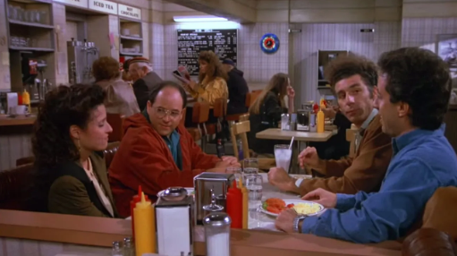

GEORGE: I'm going shopping with Susan.
ELAINE: What kind of shopping?
GEORGE: Clothes shopping.
ELAINE: Where are you going?
GEORGE: Ross'.
ELAINE: Oh that's a nice store.
GEORGE: Yeah, it's her uncle's.
JERRY: Discount?
GEORGE: One would hope.
Subject 104: Hah! Costanza's the funniest.
Subject 104: Zeta? How much time is left in this episode?
THERE ARE EIGHTEEN MINUTES AND FORTY-FOUR SECONDS REMAINING IN THIS EPISODE.
Subject 104: Heat up my dinner when there's twelve minutes left. If it's going to be gooey slop, I want warm gooey slop by the time I get to it. Ya hear?
UNDERSTOOD, MASTER SAM.
OVERLORD: *Bzzrt* Hello?
Subject 104: Huh? Hello? Yo!
OVERLORD: Finally! It took forever but I got this thing working at home.
Subject 104: Finally got the Overlord back. What? Do you need something from me?
OVERLORD: First off, you don't need to call me that anymore. I'm just Cameron now. Cam for short. Let me update the logs.
Cam: …
Cam: Hello!
Cam: The space center requires us to use official broadcast names to not interfere with other craft but since I have this at home… I'm good to go!
Subject 104: Did the space center lose funding or what?
Cam: My commissioner listens back on every log usually. There are certain things she bars due to information overload but I have faith in you. If this mission is going to work, I'll have to use unconventional methods.
Subject 104: …
JACKIE: Half milk, half coffee?
KRAMER: Yeah.
JACKIE: Hm hm. Did you take a sip?
Cam: Uh… What have you been up to? I hear Seinfeld running in the back.
Subject 104: Yep. Started listening to it after you abandoned me. It's quite funny. I like Costanza. And Newman. Both are hilarious.
Cam: I'm sorry, 104. And Newman is hilarious, I agree. Have you noticed any strange oddities in our behavior? Any visions? Memories?
Subject 104: Nope. None spotted.
Cam: I remember you mentioned a cat while the ship was spinning. Any recollection of that?
Subject 104: …
Subject 104: I do remember that a bit. I remember being super afraid at first when the cat was looking at me. But then something in me told me to jump on it and play with it. I kept tumbling around it… and I felt my head start to spin. I think that's when I woke up.
Cam: Was it a good or bad memory?
Subject 104: Honestly, it felt like a fever dream. I couldn't feel my stomach, like it was floating. The little fur hairs of the tabby cat were like bristles. Its paws were strong but not strong enough to try to squash me. It was like we were both playing without aggression. It was quite freeing considering the stress in that cockpit.
Cam: Interesting.
Subject 104: Didn't you promise to answer any question I had?
Cam: Yes! I did say that. Now that the space center's ears are out of the equation, you have free will to ask anything.
Subject 104: Why do I know human concepts? How am I aware I am a squirrel with human properties?
Cam: The Serum for Quantum Uplift and Intellectual Reasoning Enhancement, the S.Q.U.I.R.E. program for short. It's an injectable that rewrites brain connections and floods a 'genetic computer' into you. In this computer, it contains all human-based information from the year 2042 and before. Seeing as you've been travelling in cryo for about 4 years, you are not fully caught up to the world on Earth but have enough information and neural pathways to learn from it.
Cam: It can be a bit overwhelming but you've made it far enough for it to no longer be a worry. Do you feel fine overall?
Subject 104: Right as rain.
Subject 104: …
Subject 104: In Seinfeld, they have names. Names that represent more than their purpose. You're Cam. Jerry Seinfeld is Seinfeld. Did I have one before I left Earth? One that I gave myself or a real name my captors gave me?
Cam: Sorry to say, but you've always been Subject 104 from the start. If it makes you feel any better, every other animal subject on board were numbers as well.
Subject 104: That doesn't make me feel any better in the slightest.
Subject 104: I'm going to unpause Seinfeld.
Cam: Wait! Don't you want a name? Did you have one in mind?
Subject 104: Zeta called me Sam. I think it was a fluke or another human that was on board. I'm not a big fan of it.
Cam: Sam! I like it. We can be Sam and Cam. Two buddies talking through the infinite void of space… together!
Subject 104: I want to be called Cosmo.
Cam: …
Cam: Quite a mouthful, wouldn't you say? Does Cos work?
Subject 104: No. I will be called Cosmo.
Cosmo: *Chitter*
Cam: Cosmo it is! A very spacy name. No wonder though… the stars must have you contemplating like hell.
Cosmo: Don't get too high and mighty about your assumptions. I just liked it. I claim Seinfeld as my inspiration.
Cam: I've been gone-what-four days and you're already deep in the sitcom classics?
Cosmo: Already on season seven.
Cosmo: Seinfeld isn't just a story: it's a way of life. He understands the way the world works in a manner more humorous and precise than all the other shows on this digital archive.
Cam: Not even Friends?
Cosmo: Friends is lame. Not relatable.
NEW NAME COSMO HAS GONE AT LENGTH AND RECORDED SEVERAL RANTS ABOUT THIS TOPIC. WOULD YOU LIKE TO HEAR?
Cam: No. God no.
Cam: Don't relax too much, Cosmo. I know I said your job is finished but there are a few more lingering things.
Cam: You passed Jupiter a day or two ago and are en-route to Saturn, expected to arrive in about three years.
Cosmo: Three years? Shouldn't be too bad with all these shows.
Cam: Though…
Cam: You're already two years-old and life expectancy is three for your species.
Cosmo: Really? I looked it up and it said I had ten years in captivity. Even twenty if I played my cards right and ate the slop!
Cam: Cryo messes with biochemistry when left out for too long. Frozen meat gets freezer-burn and becomes sour once it thaws. You can only spend about eight months out of cryo before effects set in.
Cosmo: So you want me to leave my show and go to sleep for a few years? MY Seinfeld? Torn from me?
Cam: It's a matter of life and death, Cosmo.
Cosmo: Two months. I'll do two months and go into cryo. That make you happy?
Cam: That would make humanity happy.

Cosmo: Log end.